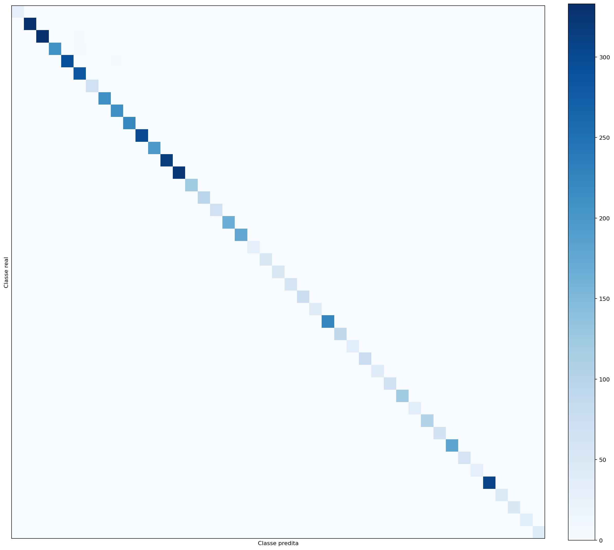
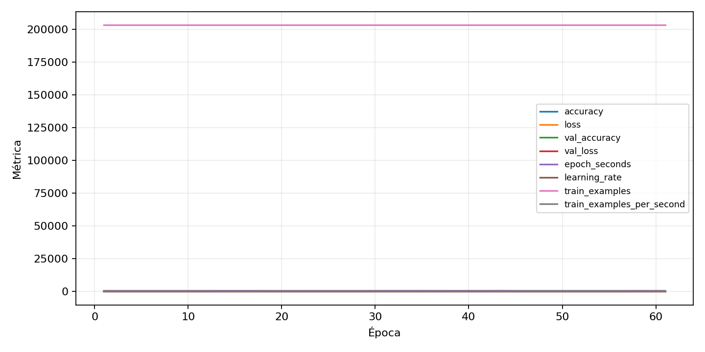

| n_samples | 5876 |
|---|---|
| loss | 0.016353819519281387 |
| accuracy | 0.9954050374404356 |
| balanced_accuracy | 0.9970668364646122 |
| macro_f1 | 0.996748931152382 |


| Índice | Classe | Suporte | Precisão | Recall | F1 |
|---|---|---|---|---|---|
| 0 | 0 | 31 | 1.0 | 1.0 | 1.0 |
| 1 | 1 | 333 | 0.993993993993994 | 0.993993993993994 | 0.993993993993994 |
| 2 | 2 | 337 | 0.9970059880239521 | 0.9881305637982196 | 0.992548435171386 |
| 3 | 3 | 211 | 0.9951690821256038 | 0.976303317535545 | 0.985645933014354 |
| 4 | 4 | 297 | 0.9965986394557823 | 0.9865319865319865 | 0.9915397631133671 |
| 5 | 5 | 283 | 0.9756944444444444 | 0.9929328621908127 | 0.9842381786339754 |
| 6 | 6 | 67 | 1.0 | 1.0 | 1.0 |
| 7 | 7 | 211 | 1.0 | 1.0 | 1.0 |
| 8 | 8 | 211 | 0.985981308411215 | 1.0 | 0.9929411764705882 |
| 9 | 9 | 220 | 0.995475113122172 | 1.0 | 0.9977324263038548 |
| 10 | 10 | 301 | 0.9966777408637874 | 0.9966777408637874 | 0.9966777408637874 |
| 11 | 11 | 198 | 0.9899497487437185 | 0.9949494949494949 | 0.9924433249370276 |
| 12 | 12 | 315 | 1.0 | 1.0 | 1.0 |
| 13 | 13 | 324 | 0.9969230769230769 | 1.0 | 0.9984591679506933 |
| 14 | 14 | 121 | 1.0 | 1.0 | 1.0 |
| 15 | 15 | 94 | 1.0 | 1.0 | 1.0 |
| 16 | 16 | 67 | 1.0 | 1.0 | 1.0 |
| 17 | 17 | 166 | 0.9940119760479041 | 1.0 | 0.996996996996997 |
| 18 | 18 | 180 | 1.0 | 0.9888888888888889 | 0.9944134078212291 |
| 19 | 19 | 31 | 1.0 | 1.0 | 1.0 |
| 20 | 20 | 49 | 1.0 | 1.0 | 1.0 |
| 21 | 21 | 49 | 1.0 | 1.0 | 1.0 |
| 22 | 22 | 58 | 1.0 | 1.0 | 1.0 |
| 23 | 23 | 76 | 1.0 | 0.9868421052631579 | 0.9933774834437086 |
| 24 | 24 | 40 | 0.975609756097561 | 1.0 | 0.9876543209876543 |
| 25 | 25 | 225 | 0.9955555555555555 | 0.9955555555555555 | 0.9955555555555555 |
| 26 | 26 | 90 | 0.9782608695652174 | 1.0 | 0.989010989010989 |
| 27 | 27 | 36 | 1.0 | 1.0 | 1.0 |
| 28 | 28 | 76 | 1.0 | 1.0 | 1.0 |
| 29 | 29 | 40 | 1.0 | 1.0 | 1.0 |
| 30 | 30 | 67 | 1.0 | 0.9850746268656716 | 0.9924812030075187 |
| 31 | 31 | 121 | 1.0 | 1.0 | 1.0 |
| 32 | 32 | 36 | 1.0 | 1.0 | 1.0 |
| 33 | 33 | 103 | 1.0 | 1.0 | 1.0 |
| 34 | 34 | 63 | 0.984375 | 1.0 | 0.9921259842519685 |
| 35 | 35 | 180 | 1.0 | 0.9944444444444445 | 0.9972144846796658 |
| 36 | 36 | 58 | 1.0 | 1.0 | 1.0 |
| 37 | 37 | 31 | 1.0 | 1.0 | 1.0 |
| 38 | 38 | 310 | 0.9967637540453075 | 0.9935483870967742 | 0.9951534733441034 |
| 39 | 39 | 45 | 1.0 | 1.0 | 1.0 |
| 40 | 40 | 49 | 1.0 | 1.0 | 1.0 |
| 41 | 41 | 36 | 1.0 | 1.0 | 1.0 |
| 42 | 42 | 40 | 1.0 | 1.0 | 1.0 |
{"adapter":"gtsrb","balance_mode":"oversample","class_names":["0","1","2","3","4","5","6","7","8","9","10","11","12","13","14","15","16","17","18","19","20","21","22","23","24","25","26","27","28","29","30","31","32","33","34","35","36","37","38","39","40","41","42"],"dataset":"gtsrb","dataset_options":{},"dataset_root":"/home/msduda/datasets-tcc/gtsrb","native_channels":3,"normalization":"zscore","num_classes":43,"protocol":{"checkpoint_monitor":"val_macro_f1","dtype_policy":"mixed_float16","early_stopping":{"patience":10,"restore_best_weights":true},"evaluation_augmentation":false,"input_channels":"native","optimizer":"Adam","pretrained_weights":false,"reduce_lr_on_plateau":{"factor":0.3,"min_lr":1e-07,"patience":4},"resize":"proportional_padding","test_time_augmentation":false,"training_from_scratch":true},"seed":42,"source_fingerprint":"e07bdb2a0cbaaa95924cda55fec26c2902b0cc736e3c6de8531ff96b0c7ee2e8","source_manifest":{"class_names":["0","1","2","3","4","5","6","7","8","9","10","11","12","13","14","15","16","17","18","19","20","21","22","23","24","25","26","27","28","29","30","31","32","33","34","35","36","37","38","39","40","41","42"],"joined_samples":39270,"metadata":{"layout":"gtsrb-folders-or-csv"},"name":"gtsrb","native_channels":3,"source_path":"/home/msduda/datasets-tcc/gtsrb","splits":{"test":12630,"train":26640},"target_size":128},"target_size":128,"test_fraction":0.15,"train_fraction":0.7,"training":{"augmentation":{"brightness_delta":0.03,"contrast_lower":0.92,"contrast_upper":1.08,"cutout_max_frac":0.08,"cutout_prob":0.25,"flip_lr":true,"noise_std":0.005,"translate_frac":0.05,"zoom_max":1.04,"zoom_min":0.96},"batch_size":512,"default_image_size":64,"dtype_policy":"mixed_float16","early_stopping_patience":10,"extra_fraction":2.0,"image_size_overrides":{"gtsrb":128},"keras_verbose":1,"learning_rate":0.0003,"max_epochs":100,"preprocess_cache_max_mib":2048,"reduce_lr_factor":0.3,"reduce_lr_min_lr":1e-07,"reduce_lr_patience":4,"shuffle_buffer_max_mib":1024},"validation_fraction":0.15}
{"epochs_completed":61,"epochs_recorded":61,"evaluation_seconds":19.40705336201063,"fit_seconds_current_attempt":35879.862615353995,"max_epoch_seconds":634.4050471460068,"max_epochs":100,"mean_epoch_seconds":584.1435219706074,"mean_train_examples_per_second":348.3362667162615,"median_train_examples_per_second":349.61944528183534,"min_epoch_seconds":546.4017396069976,"selected_checkpoint":"/mnt/e/tcc-benchmark/outputs/remaining-ram-capped/gtsrb/runs/gtsrb__zscore__oversample__seed-42/checkpoints/best.keras","total_seconds":35632.754840207046,"training_seconds":35632.754840207046,"wall_seconds_current_attempt":35949.222247116}
{"elapsed_seconds":35949.467274787996,"event_counts":{"data_preparation_end":1,"data_preparation_start":1,"epoch_end":61,"evaluation_end":1,"evaluation_start":1,"fit_end":1,"fit_start":1,"periodic":7088,"run_completed":1,"train_start":1},"generated_at":"2026-08-02T03:34:40.180+00:00","gpu_backend":"pynvml","interval_seconds":5.0,"metrics":{"cpu_percent":{"count":7157,"max":18.4,"mean":10.724451585859997,"min":0.0,"p50":10.8,"p95":11.5},"disk_data_free_bytes":{"count":7157,"max":998258622464.0,"mean":998257693082.344,"min":998257446912.0,"p50":998257618944.0,"p95":998258618368.0},"disk_data_percent":{"count":7157,"max":2.7,"mean":2.7,"min":2.7,"p50":2.7,"p95":2.7},"disk_data_total_bytes":{"count":7157,"max":1081101176832.0,"mean":1081101176832.0,"min":1081101176832.0,"p50":1081101176832.0,"p95":1081101176832.0},"disk_data_used_bytes":{"count":7157,"max":27851374592.0,"mean":27851128421.656002,"min":27850199040.0,"p50":27851202560.0,"p95":27851202560.0},"disk_output_free_bytes":{"count":7157,"max":248551591936.0,"mean":248539615400.2582,"min":248535494656.0,"p50":248539357184.0,"p95":248543314739.2},"disk_output_percent":{"count":7157,"max":75.2,"mean":75.19809976247032,"min":75.1,"p50":75.2,"p95":75.2},"disk_output_total_bytes":{"count":7157,"max":1000186310656.0,"mean":1000186310656.0,"min":1000186310656.0,"p50":1000186310656.0,"p95":1000186310656.0},"disk_output_used_bytes":{"count":7157,"max":751650816000.0,"mean":751646695255.7418,"min":751634718720.0,"p50":751646953472.0,"p95":751650406400.0},"elapsed_seconds":{"count":7157,"max":35949.230198,"mean":17981.715181361047,"min":0.033502,"p50":17980.53466,"p95":34167.108380599995},"gpu_count":{"count":7157,"max":1.0,"mean":1.0,"min":1.0,"p50":1.0,"p95":1.0},"gpu_memory_percent":{"count":7157,"max":89.11147117614746,"mean":84.77765643365126,"min":81.76617622375488,"p50":84.95254516601562,"p95":87.70556449890137},"gpu_memory_total_bytes":{"count":7157,"max":8589934592.0,"mean":8589934592.0,"min":8589934592.0,"p50":8589934592.0,"p95":8589934592.0},"gpu_memory_used_bytes":{"count":7157,"max":7654617088.0,"mean":7282345236.281123,"min":7023661056.0,"p50":7297368064.0,"p95":7533850624.0},"gpu_temperature_c":{"count":7157,"max":59.0,"mean":51.15313678915747,"min":42.0,"p50":50.0,"p95":56.0},"gpu_utilization_percent":{"count":7157,"max":100.0,"mean":23.00992035769177,"min":0.0,"p50":3.0,"p95":96.19999999999982},"process_cpu_percent":{"count":7157,"max":205.9,"mean":126.48681011597037,"min":0.0,"p50":127.0,"p95":132.3},"process_read_bytes":{"count":7157,"max":474505216.0,"mean":474502780.262121,"min":474374144.0,"p50":474505216.0,"p95":474505216.0},"process_rss_bytes":{"count":7157,"max":9818685440.0,"mean":9281991406.294258,"min":5177139200.0,"p50":9349218304.0,"p95":9587130368.0},"process_vms_bytes":{"count":7157,"max":53107507200.0,"mean":51992980536.80145,"min":49605488640.0,"p50":51986739200.0,"p95":52255174656.0},"process_write_bytes":{"count":7157,"max":1241088.0,"mean":1241088.0,"min":1241088.0,"p50":1241088.0,"p95":1241088.0},"ram_available_bytes":{"count":7157,"max":11516014592.0,"mean":7375970711.482465,"min":6830104576.0,"p50":7302627328.0,"p95":8017531699.2},"ram_percent":{"count":7157,"max":58.9,"mean":55.61972893670533,"min":30.7,"p50":56.1,"p95":57.5},"ram_total_bytes":{"count":7157,"max":16619089920.0,"mean":16619089920.0,"min":16619089920.0,"p50":16619089920.0,"p95":16619089920.0},"ram_used_bytes":{"count":7157,"max":9788985344.0,"mean":9243119208.517536,"min":5103075328.0,"p50":9316462592.0,"p95":9556103168.0}},"sample_count":7157,"schema_version":1}